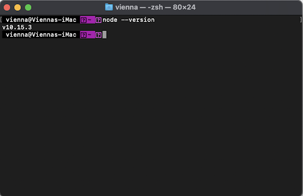
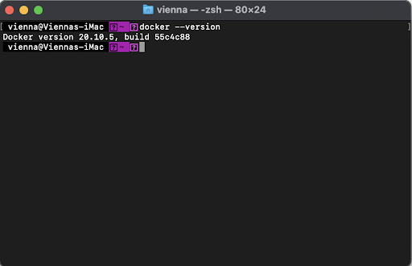
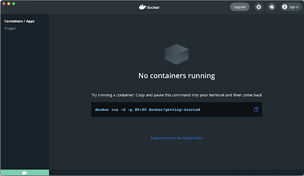
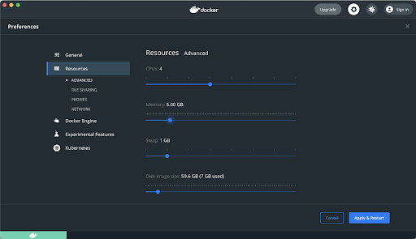
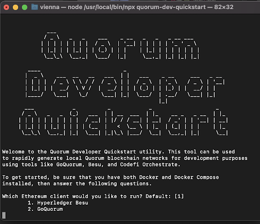
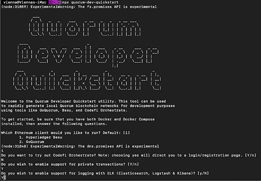
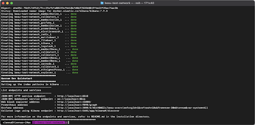
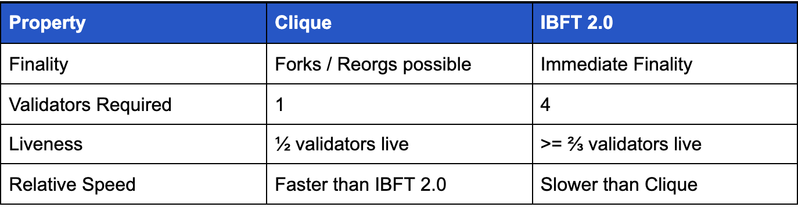

What is an Ethereum Client? Running Hyperledger Besu
Hyperledger Besu is an Ethereum client with mainnet compatibility. It can also be used to run a private network. It is the open-source protocol layer that delivers all the perks from Ethereum and addresses enterprise requirements. Hyperledger Besu is actually part of a bundled suite of Ethereum protocol clients called ConsenSys Quorum, which consists of Hyperledger Besu and GoQuorum, private key managers, consensus mechanisms, transaction managers, APIs, plugins, libraries, deployment tools, etc. In this tutorial, we are going to walk you through how the client works, and take some detours to explain concepts in detail.
Let’s get started
At the end of this guide, we will have walked you through deploying the Hyperledger Besu via the ConsenSys Quorum quickstart AND learned generally about private and public networks. As part of this process you will:
- Part 1: Download all necessary dependencies required of your system to run the ConsenSys Quorum Quickstart
- Part 2: Download and Start the ConsenSys Quorum Quickstart
- Part 3: Set up MetaMask and import a private key from the README
- Part 4: Deploy a decentralized application to the private network
- Part 5: Use the monitoring tools used in the quickstart
- Part 6: Deploy a second Smart Contract to the network and send a private transaction
We will walk you through every step of the process, helping you get setup and providing helpful resources in case you get stuck. We will go into more detail than the documentation, where appropriate, to give you a deeper understanding of Hyperledger Besu
We will be referring to the documentation found here throughout this article and linking to other useful documentation if you would like to do deeper into any particular topic.
Part 1: Installing Dependencies
This section will walk you through the installation of dependencies. This is written for new developers or those unfamiliar with the technology used by Hyperledger Besu. Feel free to move at a pace that meets your needs.
MacOS users will start by installing NodeJS.
Open up the terminal. If this is the first that you are hearing the term terminal or directory, check out this guide to understanding how the shell, terminal, and directories on a computer will work. This will be important to understanding how to navigate to the appropriate location on your computer.
Type in node --version to see if node is already installed on your computer.
If it is, you will get the version returned, for example:

If node is not installed, you will see command not found: node. Click on this link to go to the Nodejs website and download the MacOS installer (the file name will end in .pkg). Open it up and follow the instructions.
Once completed, restart your terminal. Then type node --version into the terminal again to confirm Node has properly installed.
If you are having problems with installation of node, you can access the help from the Node community via the “help” section of their GitHub, which includes links to their Slack channel.
MacOS users will now move onto installing Docker and Docker Compose
Open up the terminal and type in docker --version to see if Docker is already installed on your computer. If it is, you will get the version returned, for example:

If Docker is not installed, you will see command not found: docker. Click on this link to go to Docker website and download Docker Desktop, which will include Docker and Docker Compose. Click the button for the appropriate chip within your Mac (The Apple chip was released in late 2020, if you have a Mac from before then it’s most likely an Intel chip)
Follow along with the rest of the instructions in the link provided. For a tutorial on Docker itself, you can find that here, along with another Getting Started Guide here. If you run into issues, access the troubleshooting guide for Docker.
Open up Docker on your desktop, and you should see the following:

Click on the Gear icon in the upper right corner. Navigate to resources and ensure under the “Advanced” tab there is at least 6 GB of memory allocated to allow us to run all the examples in this Getting Started guide. Your settings should look like something below:

Linux users will need first need to install Docker Engine and then can follow the steps contained within the Docker Compose documentation.
After installing Docker, Linux users MUST follow the post-installation steps. Specifically, you need to add the user to the docker group, this step is often overlooked and every docker command will fail if this is not done.
Part 2: Installing and Starting the Quorum Quickstart
Open up the terminal and type in npx quorum-dev-quickstart and press enter (npx, as opposed to the command npm, will cut down on pollution on your computer by not installing dependencies)
The quickstart will download and we will get the following prompt. For the purposes of this guide, we will use the Hyperledger Besu option - which is 1.

We are not trying out Codefi Orchestrate in this demo, so hit “N for the prompt:
Do you want to try out Codefi Orchestrate? Note: choosing yes will direct you to a login/registration page. [Y/n]
N
We do want to enable support for private transactions, so choose Y for the following prompt:
Do you wish to enable support for private transactions? [Y/n]
Y
Do you wish to enable support for logging with ELK (Elasticsearch, Logstash & Kibana)? [y/N]
Y
This will look like:

The default directory that will be created to store these files will be named quorum-test-network, but you can rename the network on this next line:
Where should we create the config files for this network? Please choose either an empty directory, or a path to a new directory that does not yet exist. Default: ./quorum-test-network
For example, if I wanted to name the directory besu-test-network, I would enter ./besu-test-network and this would create a new directory called besu-test-network. The name of the new directory has to be a directory that does not exist, or else we will get an error.
The Quorum Quickstart will be installed on your computer in the directory named quorum-test-network. In the terminal, change directory to the quorum-test-network folder with the command cd quorum-test-network and the list out the sub-directories and files within this folder by typing the command ls to list the contents of quorum-test-network
Type in the command less README.md to see the instructions for the quickstart. Hit q to exit out of this view. Alternatively, you can see the READ.ME within the Quorum Dev Quickstart by viewing it within the ConsenSys Quorum GitHub Repository.
We are now going to start a private network that will run using Hyperledger Besu as the Ethereum client. This private network will run locally on our computer.
Run the command ./run.sh in the terminal. The private network will now begin running. If you run into any issues with starting the Quickstart, use the Hyperledger Besu chat channel to reach out for help.
How will we know if we have successfully launched the network?
You should see the following (it may take a few minutes for this to load):

Congratulations! You’ve spun up a private Ethereum network on your local computer using Hyperledger Besu.
Issues you may encounter, and how to resolve them:
If you have use Docker and Docker compose previously, particularly with a previous version of this quickstart, it is likely that you could run into an error upon start up:
ERROR: Pool overlaps with other one on this address space
If you get this error, it means that even though the docker containers are down, the networks may still exist. A longer thread explaining this issue can be found here.
A helpful resolution is to open up the command line and run the following command:
docker network prune
If that does not work, run the following combination of commands
docker-compose down docker network prune
This will restart the Docker service, and hopefully resolve any overlap conflicts.
You can also run
run docker ps
to check for any overlapping registered containers. Once those are identified, use
docker rm
to remove the containers that are overlapping.
A Brief Discussion of the Consensus Mechanism
Let’s quickly discuss the consensus mechanism you are using in your network. As we discussed earlier, the consensus mechanism is the coordinating process that the network uses to confirm, sync, and finalize new blocks on your blockchain. In this section, we are going to explore the two Proof of Authority (PoA) consensus mechanisms that you can use with Hyperledger Besu: Clique and IBFT 2.0.
In a private network, we want to avoid using the consensus mechanism that is used on Ethereum mainnet - Ethash Proof of Work (PoW). Why? Ethash works well for Ethereum mainnet because anyone can participate in Ethereum mainnet by running a node and providing computation power to the network. Therefore, this computationally intense consensus mechanism ensures that any participant must compete with the other participants to produce and propagate blocks. The incentive of block rewards serves to ensure they are following the rules of the network. The more computing power that each node brings to the network, the greater benefits to the security of the network when PoW is the consensus mechanism.
We are going to assume that you are not using the Ethash Proof of Work (PoW) consensus mechanism that is used for Ethereum mainnet because your network has participants that are:
- Known to each other, and
- Have a certain degree of inherent trust in each other.
These two assumptions allow for your network to use a consensus mechanism which is more computationally efficient for the participants - they do not have to have the same computing power required of a node on Ethereum mainnet. These assumptions also allow for the removal of the incentive of block rewards to ensure compliance. Using a PoA consensus mechanism gives your network:
Faster block creation as compared to a network running Ethash: Your network can create new blocks in a one or two seconds. As a comparison, Ethash on mainnet averages about 15 seconds for creation of a new block.
Greater transaction throughput for the network: Without the need to incentivize the participants, the size of each block can be arbitrarily large, allowing for blocks with many transactions included as your network needs them to be included. Large transactions will not significantly or noticeably slow down the network (smaller blocks will be processed faster than larger blocks, the end user should not notice a difference).
PoA assumes that the creators of the blocks - which are sometimes called minters, signers, sealers, or validators (we will refer to nodes on a PoA network as validators from here on) - are authorized to be validators. At the creation of the PoA network we declare a group (or “pool”) of validators, and as the network runs, those starting validators can add and/or subtract other validators.
A short explanation of PoA
To understand PoA, it helps to specifically discuss the consensus mechanism Clique PoA, as it was designed to approximate Ethereum mainnet for use in Ethereum testnets. The Ropsten testnet used PoW, but was plagued by attackers forcing reorgs and forks in the testnet and increasing the block gas limit and sending large transactions, which effectively stopped the network. A new consensus mechanism was designed by Péter Szilágyi called Clique, which could replace PoW on networks like testnets. Clique PoA was designed to use the existing Ethereum block data structure to add voting functionality. Generally in any PoA consensus mechanism, validators alternate adding blocks to the blockchain in a series. In addition to adding blocks, they can choose to vote to add or kick out a validator. This allows malicious validators to be removed from the network, and trusted validators to be added. This gives PoA resistance against certain kinds of attack vectors like:
- A malicious validator - if a machine is compromised, and a validator proposes incorrect blocks, they can be voted out by the other validators
- A censoring validator - if a compromised validator proposes votes to remove good actors, they can be removed by being voted out
- A spamming validator - if a validator makes a voting proposal in every block that the validator creates, the network is spammed by having to consistently tally the votes (votes being to add or remove a validator). By resetting voting after a set period of time (this period of time is referred to as an epoch and is set to be 30,000 blocks in our tutorials), this problem can be mitigated.
Concurrent block creation by a validator can also be prevented by ensuring there is a substantial enough lag between each block being added to the blockchain.
In short, many of the features of mainnet Ethereum can be approximated, but without needing to use PoW and the challenges that using PoW on a private or test blockchain would entail.
Clique PoA Compared to IBFT 2.0 PoA
Now that we know a bit more about PoA, we’ll compare Clique PoA with IBFT 2.0 PoA in regards to:
- Finality - the amount of time required to guarantee a block has been added to the blockchain.
- Validators required - the minimum amount of validator nodes that have to participate in the network in order for the PoA consensus mechanism to work as intended.
- Liveness - the number of validator nodes that must be online or “live” to allow the network to continue running. This can also be thought of as a kind of fault tolerance - the number of validators that can fail at a given point in time and the network will still run.
- Relative Speed of Block Creation - how long it takes for each PoA consensus mechanism to create and sync new blocks and the factors that impact the speed of block creation.

Finality
Instantaneous finality is possible when only one block can be added at a point in time to the blockchain. If there is a possibility that multiple blocks are proposed at the same time, then a fork or reorganization can occur, and the validators are forced to make a choice about which block is a part of the final chain.
In Clique PoA, a block will not be guaranteed to be added to the chain upon creation because there is a possibility of two blocks being proposed at the same time if a validator proposes a block out of turn. Blocks proposed simultaneously cause a fork in the network, as there are now two possible blocks for the next validator to create a block subsequent to (the second signer is prevented from signing subsequent blocks by the consensus mechanism). Because there are now two possible chains that could be built, the network must reorganize (or reorg), choosing which chain to build on. Due to this possibility, finality can be delayed when using Clique PoA if validators create blocks out of turn, and a block is not definitively confirmed upon creation.
IBFT 2.0 has immediate finality, provided there are four validators. Once a block is created it becomes part of the blockchain. There are no forks.
Validators Required
Clique can run with a single validator (the use case for a single validator is purely demonstration purposes). As the number of validators in a Clique network increases, the probability of forks in the network increases.
IBFT 2.0 requires four validators to be byzantine fault tolerant. Three or less validators running on an IBFT 2.0 network will no longer guarantee immediate finality or prevent network manipulation, particularly if one or more of the validators is acting in an adversarial nature.
Liveness
Clique can operate with half of the validators running (half of the validators can go down and the network will still work).
IBFT 2.0 can operate as long as at least ⅔ of the validators are working. As noted in the validators required section, three or less validators running on an IBFT 2.0 network will no longer guarantee immediate finality, particularly if one or more of the validators is acting in an adversarial nature.
Speed
Clique is faster than IBFT 2.0 at adding blocks.
IBFT 2.0 is slower at adding blocks. As more validators are added the time to add new blocks increases.
Specific Examples
Guitar Manufacturing
A custom guitar manufacturer wants to create transparency for their customers to show the woods they are using in building custom guitars. They source woods locally and use reclaimed woods from the city they are based in. They want to write a transaction to a blockchain so that a customer can scan a QR code and see each transaction associated with the various woods used in the guitars. They work directly with two wood suppliers, and with an additional individual who helps them with salvage work to get reclaimed wood from old buildings. Looking at this case, we see the following:
- There is anywhere from a single to maybe four participants to start (the two wood suppliers and the reclaimed wood supplier)
- This is a project to provide transparency to the end-user, so transactions can be sent as needed, with addresses being created to represent specific guitars that are being built.
- The transactions will represent different woods and provide information on their sourcing
- If a single node were run, if it were to go offline, it would only impact the guitar builder.
Because immediate finality is not required, there is the potential of only needing a single validator at the start, it would be possible to use a Clique PoA network. If the suppliers wanted to join the network, they could all do so, and if one of them left the network, there would not be an impact to running the blockchain.
Casinos
A group of six casinos decide to create a sportsbook together, in order to share in winnings and decrease the individual exposure of each casino. Each casino will run a validator node and transactions will be the bets that bettors place on basketball games. As the games being bet on have a specific start time, bets must be included in the blockchain to receive a payout. If bets are not included, the payout is not able to be made to the bettor. Looking at this use case, we see the following: There are at least six participants at start, and therefore we assume there will be six validators The bets that are made have to be included in a block. Immediate finality is required If a certain number of casinos go offline, we may have to question whether to take bets or not, since the other casinos become more exposed to the betting positions. There should be a high volume of transactions allowed, as the scenario of the number of placed bets is likely to increase the closer a basketball game approaches the start time. Because immediate finality is required, we are drawn to using an IBFT 2.0 PoA network. If we were to do this, then we would need at least 4 validators. Since there are six casinos participating, we can use an IBFT 2.0 PoA network. If more than two casinos were to leave then the network would no longer be able to run. In terms of liveness, the network can withstand a validator going offline (due to a power outage or other reason), and continue to operate, which is very important for the overall success of the sports book.
Determining the PoA Consensus Mechanism to Use in Your Network
Based on these examples, here are questions to ask yourself, which can help you determine which PoA consensus mechanism may make more sense. What are my finality requirements?
- Does my use case require that each block created instantly be confirmed?
- If a block is not instantly confirmed, what are the potential impacts?
How many validators do I intend my network to have?
- How many will I have at the start?
- How many could be added to the network over time?
- Do I think validators could leave my network?
- Would I stop running the network if a certain number of validators left?
- Do I need participants to join the network without being validators? Should they be able to submit transactions?
What fault tolerance does my network require?
- Does the number of validators that will participate at start allow for the network to continue running if one goes down?
- What happens if two or more validators go down?
How fast do I need to be able to create new blocks?
- Will the speed at which I need to create new blocks stay constant or can it slow down if new validators are added?
These questions can serve as a guide in thinking which PoA consensus mechanism makes sense for your use case.
Part 3: Set up MetaMask
Now that we have the network up and running, we are going to set up our MetaMask wallet. If you already have MetaMask installed, you can skip this step. If not, follow the links below.
First, download the MetaMask browser extension. If you want to explore the features of MetaMask, this article can help you walk through how to send your first transaction using MetaMask.
Follow the instructions to set up your MetaMask account. For the purposes of this guide, the accounts we will be using will not have mainnet Ether. Still get in the habit of the following: - Copy down your seed phrase and store it in a secure location. - Do not share your seed phrase with anyone - Ensure that you can use your seed phrase to recover your account
MetaMask is a self-custodial wallet, so if you lose the seed phrase associated with it, you have lost access to that Ethereum account. If you give that seed phrase to someone, they now have control over that account.
Open up your MetaMask account and navigate to to the top of the browser extension click on the Ethereum Mainnet menu. From the drop down select Localhost 8545. This is where the blockchain that we spun up with the quickstart is running.
If you want to learn more about connecting to different networks, this documentation from MetaMask will give you more insight on how it works. MetaMask will allow us to send transactions between Ethereum accounts on our network, which we will call Externally Owned Accounts (EOA). When we ran the quickstart, the private blockchain network that we created was initialized with three accounts pre-loaded with test Ether.
Looking into the quorum-test-network folder, you will see a structure within the config -> besu folder that shows the three member folders. In each folder is a keys folder, which has a file called key, which is the private key and key.pub, which is the public key.
We will open the file named “key” in member1 to see what is inside
Here we see the private key, without the 0x prefix. The private key for this address would be
0x8f2a55949038a9610f50fb23b5883af3b4ecb3c3bb792cbcefbd1542c692be63
To import this address into our MetaMask, we will click the circle in the upper right corner of the MetaMask extension. This circle is called a favicon by the MetaMask team:
We will hit the Import Account button:
And will copy paste the private key, repeated below:
0x8f2a55949038a9610f50fb23b5883af3b4ecb3c3bb792cbcefbd1542c692be63
Into the following field
This will create our account, which is pre-loaded with 200 test Ether:
Below you can find information about the pre-loaded accounts:, in the event you want to import them:
Test Account 1 (address 0xfe3b557e8fb62b89f4916b721be55ceb828dbd73) Private key to copy : 0x8f2a55949038a9610f50fb23b5883af3b4ecb3c3bb792cbcefbd1542c692be63 Initial balance : 200 Eth (200000000000000000000 Wei)
Test Account 2 (address 0x627306090abaB3A6e1400e9345bC60c78a8BEf57) Private key to copy : 0xc87509a1c067bbde78beb793e6fa76530b6382a4c0241e5e4a9ec0a0f44dc0d3 Initial balance : 90000 Eth (90000000000000000000000 Wei)
Test Account 3 (address 0xf17f52151EbEF6C7334FAD080c5704D77216b732) Private key to copy : 0xae6ae8e5ccbfb04590405997ee2d52d2b330726137b875053c36d94e974d162f Initial balance : 90000 Eth (90000000000000000000000 Wei)
If we import these accounts and send 7 ETH from Test Account 1 to Test Account 2:
we can see within the block explorer (accessible in our browser at http://localhost:25000/), Account 1 will decrement by 7 ETH:
And that Account 2 will increase by just under 7 ETH
Why didn’t Account 2 increase by 7 ETH? In this specific example, we have paid a transaction cost to send the Ether from one account to another. The transaction cost is called the gas, and is sometimes also called the gas fee. It is paid in increments of Ether called Wei, which is a fractional amount of ETH (1 Wei is 10^-18 ETH). There is a 21000 wei cost we pay to send Ether, and that is deducted from the transaction, which was the gas limit (the upper amount of gas we are willing to pay) stipulated for this transaction on MetaMask.
The private network we have created is a gas-less network, so there is no need to pay that fee, and we could reduce the gas limit to 0 and the transaction would go through. Understanding gas is critical for understanding how mainnet Ethereum works, as well as how it may be useful in other private networks we create, but for now, you can read a brief overview about gas here to better understand this concept.
How were these accounts created?
When we ran ./run.sh in our terminal, this script told docker-compose to run a .yml file, which contained information about the accounts, keys, and initialization information for our network in a genesis file. This genesis file - which is a .json file, provided our blockchain with information about the accounts, including the address and the amount of Ether they held. To see a genesis file in the quickstart, you can open and look at cliqueGenesis.json, which is in the quorum-test-network -> config -> besu directory. It looks like the following:
{ "config":{ "chainId":1337, "constantinoplefixblock": 0, "clique":{ "blockperiodseconds":15, "epochlength":30000 } }, "coinbase":"0x0000000000000000000000000000000000000000", "difficulty":"0x1", "extraData":"0x00000000000000000000000000000000000000000000000000000000000000004592c8e45706cc08b8f44b11e43cba0cfc5892cb0000000000000000000000000000000000000000000000000000000000000000000000000000000000000000000000000000000000000000000000000000000000", "gasLimit":"0xa00000", "mixHash":"0x0000000000000000000000000000000000000000000000000000000000000000", "nonce":"0x0", "timestamp":"0x5c51a607", "alloc": { "fe3b557e8fb62b89f4916b721be55ceb828dbd73": { "privateKey": "8f2a55949038a9610f50fb23b5883af3b4ecb3c3bb792cbcefbd1542c692be63", "comment": "private key and this comment are ignored. In a real chain, the private key should NOT be stored", "balance": "0xad78ebc5ac6200000" }, "627306090abaB3A6e1400e9345bC60c78a8BEf57": { "privateKey": "c87509a1c067bbde78beb793e6fa76530b6382a4c0241e5e4a9ec0a0f44dc0d3", "comment": "private key and this comment are ignored. In a real chain, the private key should NOT be stored", "balance": "90000000000000000000000" }, "f17f52151EbEF6C7334FAD080c5704D77216b732": { "privateKey": "ae6ae8e5ccbfb04590405997ee2d52d2b330726137b875053c36d94e974d162f", "comment": "private key and this comment are ignored. In a real chain, the private key should NOT be stored", "balance": "90000000000000000000000" } }, "number":"0x0", "gasUsed":"0x0", "parentHash":"0x0000000000000000000000000000000000000000000000000000000000000000" }
Within this file, I have highlighted the accounts that were created and the balances they were created with (the balances are in wei, not Ether. Remember 1 wei is 10 x -18 Ether). The quickstart and the scripts we run take care of creating these accounts, but we are able to create our own network where we can initialize accounts and configure our network to be customized to our particular use case.
Understanding a Genesis File: The Basics
Setting up a private network or joining a public network requires an Ethereum node to create a new blockchain. Whether it is a private or public network, each node / validator will have a full copy of the blockchain. In order to build this copy, the node / validator has to have instructions on how to build the first block and the subsequent blocks in the chain. In this article, we are going to walk through the components of a genesis file, within the context of the Ethereum client Hyperledger Besu as the client for our network. These concepts are applicable to all Ethereum clients.
The first block in a blockchain is called the genesis block. Ethereum mainnet’s genesis block - block 0 - was mined on July 30, 2015. In order to join or create any network, the data for the genesis block must be included. Therefore, the genesis file defines the data that is in the first block of a blockchain, as well as rules for the blockchain itself. If a new node or validator attempts to join the blockchain, it will use the genesis file as the starting point in recreating the history of the chain in order to synchronize with the existing network.
The genesis file for Ethereum mainnet, along with the supported testnets, is included in the download of Besu. When creating a private network, a custom genesis file must be provided. The genesis file is a JSON formatted file. It looks like the below:
{ "config": { "chainId": 2018, "muirglacierblock": 0, "ibft2": { "blockperiodseconds": 2, "epochlength": 30000, "requesttimeoutseconds": 4 } }, "nonce": "0x0", "timestamp": "0x58ee40ba", "extraData": "0xf83ea00000000000000000000000000000000000000000000000000000000000000000d5949811ebc35d7b06b3fa8dc5809a1f9c52751e1deb808400000000c0", "gasLimit": "0x1fffffffffffff", "difficulty": "0x1", "mixHash": "0x63746963616c2062797a616e74696e65206661756c7420746f6c6572616e6365", "coinbase": "0x0000000000000000000000000000000000000000", "alloc": { "9811ebc35d7b06b3fa8dc5809a1f9c52751e1deb": { "balance": "0xad78ebc5ac6200000" } } }
In this specific example, the genesis file is for an IBFT 2.0 private network.
{ "config": { "chainId": 2018, "muirglacierblock": 0, "ibft2": { "blockperiodseconds": 2, "epochlength": 30000, "requesttimeoutseconds": 4 }
The config key section contains the following information about the blockchain
“chainId”: 2018
The chainId controls the transaction signature process, providing a unique identifier to allow for the hashing of signed transactions to only work on the network associated with the corresponding chainId. Ethereum Improvement Proposal 155 (EIP-155) provides more information on the relationale behind the chainID. Most chainIDs match the networkID of the network. In this case, 2018 refers to the chainID associated with a development chain. For a list of the network and chain IDs, please see the Documentation.
"muirglacierblock": 0,
This field is called a “milestone block”. Muir glacier refers to a specific network upgrade that occurred at block 9,200,000 on Ethereum mainnet. For private networks, like the one that is being created in this example, the name of the latest milestone block can be listed, and set to be the genesis block. Here you can see a continuously updated list of network upgrades and the associated blocks for Ethereum.
“ibft2”:
This specifies that the consensus protocol for the blockchain is IBFT 2.0. The options available for specifying the consensus mechanism are available in the documentation, with an overview of the proof-of-authority (PoA) consensus protocols available here. Within the specification, the following three fields are provided:
"blockperiodseconds": 2,
The minimum block time, in seconds. In this case, after two seconds, a new block will be proposed by the network with transactions stored in the memory pool packaged and distributed to the network.
"epochlength": 30000,
The number of blocks at which to reset all votes. The votes refer to validators voting to add or remove validators to the network. In this case, after 30,000 blocks are created, this IBFT 2.0 network will discard all pending votes collected from received blocks. Existing proposals remain in effect and validators re-add their vote the next time they create a block.
"requesttimeoutseconds": 4
The time by which a new block must be proposed or else a new validator will be assigned by the network. If a validator goes down, the request time out ensures that the proposal of a new block passes on to another validator. The request time out seconds should be set to be double the minimum block time (blockperiodseconds), hence why it is 4.
The second section, starting with "nonce": "0x0", contains information about the genesis block
"nonce": "0x0", "timestamp": "0x58ee40ba", "extraData": "0xf83ea00000000000000000000000000000000000000000000000000000000000000000d5949811ebc35d7b06b3fa8dc5809a1f9c52751e1deb808400000000c0", "gasLimit": "0x1fffffffffffff", "difficulty": "0x1", "mixHash": "0x63746963616c2062797a616e74696e65206661756c7420746f6c6572616e6365", "coinbase": "0x0000000000000000000000000000000000000000", "alloc": { "9811ebc35d7b06b3fa8dc5809a1f9c52751e1deb": { "balance": "0xad78ebc5ac6200000" } } }
"nonce": "0x0",
The number used once aka nonce, that is a part of the blockheader for the first block. Set to 0x0.
"timestamp": "0x58ee40ba",
The creation date and time of the block. Often it can be set to 0x0, but as long as it is any value in the past, it will work. In this case 0x58ee40ba is a hexadecimal which converts to 1492009146 and represents Wed Apr 12 2017 14:59:06 GMT+0000
"extraData": "0xf83ea00000000000000000000000000000000000000000000000000000000000000000d5949811ebc35d7b06b3fa8dc5809a1f9c52751e1deb808400000000c0",
Extra data is a recursive length prefix (RLP) encoded string (which is space efficient) containing the validator addresses of the IBFT 2.0 private network. The validator addresses are unique to the validators, so if there are four validators are the start of the network, this field should contain a list of their addresses.. Instructions on how to create an RLP using Besu can be found here.
"gasLimit": "0x1fffffffffffff",
The block gas limit, which is the total gas limit for all transactions included in a block. It defines how large the block size can be for the block, and is represented by an hexadecimal string. For this network, the gas limit is the maximum size, and is therefore a “free gas network”
"difficulty": "0x1",
The difficulty of creating a new block. Represented as a hexadecimal string, the difficulty is set to 1, effectively the lowest difficulty.
"mixHash": "0x63746963616c2062797a616e74696e65206661756c7420746f6c6572616e6365",
The mixHash is the unique identifier for the block, which for this genesis file is 0x63746963616c2062797a616e74696e65206661756c7420746f6c6572616e6365
"coinbase": "0x0000000000000000000000000000000000000000",
The network coinbase account, which is where all block rewards for this network will be paid. In this case it is to 0x0000000000000000000000000000000000000000, which is sometimes called address(0) or the zero address.
"alloc": { "9811ebc35d7b06b3fa8dc5809a1f9c52751e1deb": { "balance": "0xad78ebc5ac6200000"
The alloc field creates an address on our network, which is sometimes also referred to as an externally owned account, as it is an account not associated with a smart contract (referred to as a contract account). The number starting with “98” is the public key of the address. The balance can be passed in as a decimal OR a hexadecimal (like it has in this case and corresponds to 200 ETH, or 2*10^20 Wei). The balance is always in Wei, or 10^-18 Ether.
A Second Genesis File
Below we provide another genesis file with a different consensus mechanism, Clique PoA, and different information. Take a look below and see what values stick out. This is the genesis file for the chain that you can build in the ConsenSys Quorum quickstart:
{ "config":{ "chainId":1337, "muirglacierblock": 0, "clique":{ "blockperiodseconds":15, "epochlength":30000 } }, "coinbase":"0x0000000000000000000000000000000000000000", "difficulty":"0x1", "extraData":"0x00000000000000000000000000000000000000000000000000000000000000004592c8e45706cc08b8f44b11e43cba0cfc5892cb0000000000000000000000000000000000000000000000000000000000000000000000000000000000000000000000000000000000000000000000000000000000", "gasLimit":"0xa00000", "mixHash":"0x0000000000000000000000000000000000000000000000000000000000000000", "nonce":"0x0", "timestamp":"0x5c51a607", "alloc": { "fe3b557e8fb62b89f4916b721be55ceb828dbd73": { "privateKey": "8f2a55949038a9610f50fb23b5883af3b4ecb3c3bb792cbcefbd1542c692be63", "comment": "private key and this comment are ignored. In a real chain, the private key should NOT be stored", "balance": "0xad78ebc5ac6200000" }, "627306090abaB3A6e1400e9345bC60c78a8BEf57": { "privateKey": "c87509a1c067bbde78beb793e6fa76530b6382a4c0241e5e4a9ec0a0f44dc0d3", "comment": "private key and this comment are ignored. In a real chain, the private key should NOT be stored", "balance": "90000000000000000000000" }, "f17f52151EbEF6C7334FAD080c5704D77216b732": { "privateKey": "ae6ae8e5ccbfb04590405997ee2d52d2b330726137b875053c36d94e974d162f", "comment": "private key and this comment are ignored. In a real chain, the private key should NOT be stored", "balance": "90000000000000000000000" } }, "number":"0x0", "gasUsed":"0x0", "parentHash":"0x0000000000000000000000000000000000000000000000000000000000000000" }
Once again, we will look at the fields and explain them.
{ "config":{ "chainId":1337, "constantinoplefixblock": 0, "clique":{ "blockperiodseconds":15, "epochlength":30000 } }
The config key section contains the following information about the blockchain
“chainId”: 1337
In this case. 1337 refers to a local chainID. MetaMask, a self-custodial wallet, and Ganache, which is Truffle’s Private Blockchain App, both use this as the local chain ID, and so to follow convention, in this genesis file we are doing the same. For a list of the network and chain IDs, please see the Documentation.
"muirglacierblock": 0,
Once again, we have set the milestone block to Muir Glacier. Something to note - The “milestone block” could be for this configuration file, which is something you may see in some tutorials. For example, if we saw constantinopleBlock": 0, this refers to a specific network upgrade that occurred at block 7,280,000 on Ethereum mainnet. For private networks, like the one that is being created in this example, the name of the latest milestone block can be listed, and set to be the genesis block. Here you can see a continuously updated list of network upgrades and the associated blocks for Ethereum.
“clique”:
This specifies that the consensus protocol for the blockchain is Clique. The options available for specifying the consensus mechanism are available in the documentation, with an overview of the proof-of-authority (PoA) consensus protocols available here. Within the specification, the following two fields are provided:
"blockperiodseconds": 15,
The minimum block time, in seconds. In this case, after 15 seconds, a new block will be proposed by the network. Given this genesis file is modeled after the testnet, it is made to approximate the minimum blocktime of mainnet, which is 15 seconds.
"epochlength": 30000,
The number of blocks at which to reset all votes. The votes refer to validators voting to add or remove validators to the network. In this case, after 30,000 blocks are created, this Clique network will discard all pending votes collected from received blocks. Existing proposals remain in effect and validators re-add their vote the next time they create a block.
Starting at the coinbase we now have the information available in the genesis block
"coinbase":"0x0000000000000000000000000000000000000000", "difficulty":"0x1", "extraData":"0x00000000000000000000000000000000000000000000000000000000000000004592c8e45706cc08b8f44b11e43cba0cfc5892cb0000000000000000000000000000000000000000000000000000000000000000000000000000000000000000000000000000000000000000000000000000000000", "gasLimit":"0xa00000", "mixHash":"0x0000000000000000000000000000000000000000000000000000000000000000", "nonce":"0x0", "timestamp":"0x5c51a607", "alloc": { "fe3b557e8fb62b89f4916b721be55ceb828dbd73": { "privateKey": "8f2a55949038a9610f50fb23b5883af3b4ecb3c3bb792cbcefbd1542c692be63", "comment": "private key and this comment are ignored. In a real chain, the private key should NOT be stored", "balance": "0xad78ebc5ac6200000" }, "627306090abaB3A6e1400e9345bC60c78a8BEf57": { "privateKey": "c87509a1c067bbde78beb793e6fa76530b6382a4c0241e5e4a9ec0a0f44dc0d3", "comment": "private key and this comment are ignored. In a real chain, the private key should NOT be stored", "balance": "90000000000000000000000" }, "f17f52151EbEF6C7334FAD080c5704D77216b732": { "privateKey": "ae6ae8e5ccbfb04590405997ee2d52d2b330726137b875053c36d94e974d162f", "comment": "private key and this comment are ignored. In a real chain, the private key should NOT be stored", "balance": "90000000000000000000000" } }
"coinbase": "0x0000000000000000000000000000000000000000",
The coinbase account, which is where all block rewards for this network will be paid. In this case it is to 0x0000000000000000000000000000000000000000, which is sometimes called address(0) or the zero address.
"difficulty": "0x1",
The difficulty of creating a new block. Represented as a hexadecimal string, the difficulty is set to 1, effectively the lowest difficulty.
"extraData":"0x00000000000000000000000000000000000000000000000000000000000000004592c8e45706cc08b8f44b11e43cba0cfc5892cb0000000000000000000000000000000000000000000000000000000000000000000000000000000000000000000000000000000000000000000000000000000000",
Extra data is a recursive length prefix (RLP) encoded string (which is space efficient) containing the validator address of the Clique private network, which in this case is 4592c8e45706cc08b8f44b11e43cba0cfc5892cb. Instructions on how to create an RLP using Besu can be found here and how to add additional addresses for a Clique network with additional signers can be found here.
"gasLimit": "0xa00000",
The block gas limit, which is the total gas limit for all transactions included in a block. It defines how large the block size can be for the block, and is represented by an hexadecimal string. For this network, the gas limit is "mixHash":"0x0000000000000000000000000000000000000000000000000000000000000000",
The mixHash is the unique identifier for the block, which for this genesis file is 0x0000000000000000000000000000000000000000000000000000000000000000
"nonce": "0x0",
"timestamp": "0x5c51a607",
In this case 0x5c51a607 is a hexadecimal which converts to 1548854791 and represents Wed Jan 30 2019 13:26:31 GMT+0000.
"alloc": { "fe3b557e8fb62b89f4916b721be55ceb828dbd73": { "privateKey": "8f2a55949038a9610f50fb23b5883af3b4ecb3c3bb792cbcefbd1542c692be63", "comment": "private key and this comment are ignored. In a real chain, the private key should NOT be stored", "balance": "0xad78ebc5ac6200000" }, "627306090abaB3A6e1400e9345bC60c78a8BEf57": { "privateKey": "c87509a1c067bbde78beb793e6fa76530b6382a4c0241e5e4a9ec0a0f44dc0d3", "comment": "private key and this comment are ignored. In a real chain, the private key should NOT be stored", "balance": "90000000000000000000000" }, "f17f52151EbEF6C7334FAD080c5704D77216b732": { "privateKey": "ae6ae8e5ccbfb04590405997ee2d52d2b330726137b875053c36d94e974d162f", "comment": "private key and this comment are ignored. In a real chain, the private key should NOT be stored", "balance": "90000000000000000000000" }
The alloc field creates three addresses on our network, The balance can be passed in as a decimal (like the second and third account, which are both 900 ETH, or 210^20 Wei) OR a hexadecimal (like the first account, which is 200 ETH, or 210^20 Wei). The balance is always in Wei, or 10^-18 Ether.
Deploying Your Genesis File Once you have created your genesis file, you will save it within the directory where your blockchain networks files will be kept. Do not save it within any of the Node or data folders, but rather at the top level. When it is time to start your network, you will use the flag
--genesis-file=../genesis.json
To start up your network using the genesis file use the following command:
besu --genesis-file=../genesis.json
For more information, please see the Documentation. Part 4: Deploy the Pet Shop Decentralized Application within the dapps folder of the quorum-test-network directory We are now going to deploy a decentralized application (dapp) to our private network.
From your terminal, change directory to the folder dapps, and then into pet-shop cd dapps/pet-shop/
Within this directory, you will find a file called custom_config and a script called run_dapp.sh
run_dapp.sh looks like the following:
!/bin/bash
set -e
hash truffle 2>/dev/null || { echo >&2 "This script requires truffle but it's not installed." echo >&2 "Refer to documentation to fulfill requirements." exit 1 }
rm -rf pet-shop-box git clone https://github.com/truffle-box/pet-shop-box.git cp -r custom_config/* ./pet-shop-box/
cd pet-shop-box/ npm install npm install truffle npm install @truffle/hdwallet-provider
truffle compile truffle migrate --network quickstartWallet truffle test --network quickstartWallet
docker build . -t quorum-dev-quickstart_pet_shop docker run -p 3001:3001 --name quorum-dev-quickstart_pet_shop --detach quorum-dev-quickstart_pet_shop
This script is going to download from GitHub a Truffle box, which are pre-built dapps or templates for building your own dapp. In this case, the pet-shop dapp contains a smart contract called Adoption.sol, a front-end for this dapp written in react, which is a javascript library specifically for building front-ends and user interfaces, and the necessary dependencies needed to deploy the smart contract to an Ethereum network. The script is going to install truffle which is required in order to run commands using truffle, like truffle migrate. Truffle migrate is a command which specifically compiles our smart contract (Adoption.sol) into EVM bytecode and deploys it to the private network we have created. The script also downloads hdwallet-provider, which is used to create Ethereum accounts that we can use to interact with our decentralized application, and to send transactions on the private network we have created. The Ethereum accounts we have created will be imported into MetaMask.
If you want to familiarize yourself with Truffle, you can walk through a tutorial here. For our current tutorial, we are using the private network created by the quorum quickstart as our local test blockchain network.
Within the folder custom_config, we have our Smart Contract - Adoption.sol
Adoption.sol is a simple smart contract written in solidity. It looks like this:
pragma solidity ^0.5.0;
contract Adoption {
address[16] public adopters;
// Adopting a pet function adopt(uint petId) public returns (uint) { require(petId >= 0 && petId <= 15); adopters[petId] = msg.sender; return petId; }
// Retrieving the adopters function getAdopters() public view returns (address[16] memory) { return adopters; }
}
A detailed description of this smart contract, along with a tutorial to build it can be found on the Truffle website. We are going to give you a quick overview of the contract in order to contextualize what happens once it is deployed to our private blockchain.
Let us take a look at the smart contract to better understand what it does:
pragma solidity ^0.5.0;
This first line of code tells us the smart contract is written for Solidity version 0.5.0 or higher, and will be compatible with 0.5.0 and higher.
contract Adoption {
address[16] public adopters;
These two lines of code do the following:
contract Adoption { declares an object of type contract. If you want to learn more about this object type, the Solidity documentation has a nice explanation of a Contract object. In this example, anything after the { (the brackets) will define the contract object - what it can do and what it can store on the blockchain.
address[16] public adopters; instantiates 16 addresses in an array which we have given the variable name “adopters”. These addresses are public, which means they can be accessed from outside of this contract as well as inside the contract.
// Adopting a pet function adopt(uint petId) public returns (uint) { require(petId >= 0 && petId <= 15); adopters[petId] = msg.sender; return petId; }
The first line is a comment, which will not be compiled but gives us information that the following function is for adopting a pet. The function, adopt, takes in a unsigned integer called petID, and checks if it is between 0 and 15. If it is, then the address at the location of the the petID within the adopters array is assigned to the account that called the adopt function (adopters[petID] = msg.sender is the specific code). Then the petID is returned.
The second function:
// Retrieving the adopters function getAdopters() public view returns (address[16] memory) { return adopters; }
returns the array of addresses of the adopters.
Now that we understand the smart contract,we run the command ./run_dapp.sh in the terminal within the pet-shop folder (which we should have already navigated into if you have been following along with each step). This is going to download all the dependencies, as well as compile and migrate our smart contract to the private network we have created using the Quorum quickstart, and spin up a front end that will allow us to “adopt” some group of 16 pets.
When you run it, there will be many downloads. You know that the script has successfully run when you reach the following:
Here we can see that Truffle has deployed the Migrationsmart contract and has now deployed it to the Hyperledger Besu based blockchain network we have spun up. If we take the contract address: 0x345cA3e014Aaf5dcA488057592ee47305D9B3e10
that is listed here and navigate in a web browser to the block explorer (go to your browser and type in: http://localhost:25000/, then paste in the contract address: 0x345cA3e014Aaf5dcA488057592ee47305D9B3e10
We will see the following information about our deployed smart contract:
We can also use the block explorer to look up other information, like the externally owned account (in the >account field, which for our specific example is: 0x627306090abaB3A6e1400e9345bC60c78a8BEf57)
We are able to see the ETH balance for that account. The ETH used in this example is not mainnet ETH, and it is only used for testing purposes.
From this step, we hope that you can see how you can use the quickstart to deploy a decentralized application. Thus, the quickstart provides you with a template of being able to test a decentralized application of your own that you build. Let’s look at the dapp by going to our browser and typing in http://localhost:3001. We will arrive at the following screen, and MetaMask, which we installed in Part 3, will pop up for us and ask which account we want to connect to the application.
Hitting adopt will prompt MetaMask to pop-up and adopt the pet:
Since this is a gasless network, there is no fee associated with adopting a pet.
Issues you may encounter and how to solve them
When you run /.run_dapp.sh you may get the following error:
The Error: Deployment Failed “Migrations” --Wrong chainId means that within the deployment.js file, the chainID (which chain you are deploying to) was incorrectly specified.
If that is the case, you should run the npx quorum-dev-quickstart again, as this means you are on an older version of the quickstart that does not have the most up to date versions of truffle and hd-wallet provider. Specifically, you need to be on 1.4.0 and above of hd-wallet provider. Versions 1.3.0 and 1.3.1 will not work work with the quickstart (though users will see that version 1.2.6 will still work with the quickstart). Make sure you are on version 0.0.21 of the quickstart or higher to avoid this issue.
If there is no UI that appears at localhost:3001 after running the script ./run_dapp.sh, navigate to the pet-shop-box folder:
cd pet-shop-box amd use the command
npm run dev
to start up the front end in our browser. If this runs successfully, we will get the following output in the terminal:
Then you can navigate to the URLs listed in the output to see your application. Part 5: Use the monitoring tools used in the quickstart
There are monitoring tools included in the quickstart, which allow us to learn about how our private blockchain network is working. In part 4, we use the block explorer to look at the contract address of the deployed smart contract and the externally owned account that was responsible for deploying the smart contract to our network. Now we are going to explore two additional tools we can use to monitor our private network.
The first is Prometheus - an open source monitoring tool that pulls data from the services that it is connected to - like nodes, databases, validators, servers, etc - and allows for that data from these services to be use in alerts and notifications. For example, if the memory usage of a certain node on your network exceeds a defined threshold, Prometheus is able to track this and alert you so you can take the appropriate action to ensure your network continues to run properly. In the case of a failure, Prometheus provides the data from the various services to allow for troubleshooting the issue. Prometheus pulls the data and stores it in a database, and then allows you or a data visualization tool to query that data.
When you install and run the quickstart, you will get access to Prometheus at http://localhost:9090/graph. If you enter this address into a web browser, you will see the following:
What exactly is Prometheus monitoring? To see the details, you can navigate to the config folder within your quorum-test-network directory. Opening the prometheus folder will reveal a prometheus.yml file. If you open that with a text editor (like Visual Studio Code or Vim) you will see that Prometheus is configured by the quickstart to scrape data from each validator, the rpcnode, and each member of the network every 15 seconds, and to store that data in the /metrics pathway, so that you can query it. Below is a screenshot of the first 28 of the total 129 lines of the prometheus.yml file
The metrics we have access to can be seen by navigating and clicking on the curricular icon next to the Execute button in the right upper side of the screen.
This will reveal the list of metrics that you can query Promtheus to return data for:
If we choose ethereum_peer_count, it will return the number of peers on the network, which for this example is seven
If we type in the following query into the search bar (the part of the user interface with “Expression (press Shift+Enter for newlines)
besu_blockchain_difficulty_total
We will get back the following a result of our query that will look similar to the the below screenshot:
This query is asking Prometheus to return data on the total difficulty for each participant node in our network.
Prometheus has an integration with Granfana - an observability platform that takes in data - in this case from our private blockchain via Prometheus - and displays the outputs as visualizations. This allows us to make sense of what is occurring in our private network over time. The quickstart manages the connection of the data from Prometheus to pre-built dashboards in Grafana. If you navigate to http://localhost:3000/d/XE4V0WGZz/besu-overview?orgId=1&refresh=10s&from=now-30m&to=now&var-system=All, the metrics from Prometheus will be displayed in a Grafana dashboard, providing us with the metrics in tabular and graphical format.
This format makes exploring the data retrieved from Prometheus easier, and allows us to explore many metrics simultaneously.
Logs are available via Elasticsearch, Logstash, and Kibana (ELK). ELK allows us to take in process, search, transform, and display data. In the Quickstart, this is configured specifically to ingest the Besu logs. As a reminder, navigating to the terminal and running the script
./list.sh
This script will show the various endpoints and services available in the quickstart
Quorum Dev Quickstart
Setting up the index patterns in kibana ...
List endpoints and services
JSON-RPC HTTP service endpoint : http://localhost:8545 JSON-RPC WebSocket service endpoint : ws://localhost:8546 Web block explorer address : http://localhost:25000/ Prometheus address : http://localhost:9090/graph Grafana address : http://localhost:3000/d/XE4V0WGZz/besu-overview?orgId=1&refresh=10s&from=now-30m&to=now&var-system=All Collated logs using Kibana endpoint : http://localhost:5601/app/kibana#/discover
For more information on the endpoints and services, refer to README.md in the installation directory.
Navigating to the Collated logs using Kibana endpoint using your browser
http://localhost:5601/app/kibana#/discover
This will pull up a Kibana dashboard
The logs are pulled automatically by the setup of the Quickstart. For more information about configuring Kibana on your own, you can see an overview within the documentation. Part 6: Deploy a second Smart Contract to the network and send a private transaction
Now we are going to take another smart contract and deploy it to our network. This will be a simple smart contract, and the goal of deploying it is to demonstrate the use of private transactions in the network.. This smart contract is already installed as part of the quickstart, and you can find it in the folder smart_contracts.
Navigate to the smart_contracts folder using the command cd smart_contracts and you can look at that smart contract EventEmitter.sol:
pragma solidity ^0.7.0;
// compile with: // solc EventEmitter.sol --bin --abi --optimize --overwrite -o . // then create web3j wrappers with: // web3j solidity generate -b ./generated/EventEmitter.bin -a ./generated/EventEmitter.abi -o ../../../../../ -p org.hyperledger.besu.tests.web3j.generated contract EventEmitter { address owner; event stored(address _to, uint _amount); address _sender; uint _value;
constructor() public {
owner = msg.sender;
}
function store(uint _amount) public {
emit stored(msg.sender, _amount);
_value = _amount;
_sender = msg.sender;
}
function value() view public returns (uint) {
return _value;
}
function sender() view public returns (address) {
return _sender;
}
}
Run the commands
npm install node scripts/deploy.js
which will deploy the EventEmitter.sol smart contract that is in the contracts folder and send a private transaction from Member1 to Member3 of the network. The private transaction, in this example, is the sending of a value from Member1 to Member3. If we look inside the deploy.js script, we will see that the value being sent from Member1 to Member3 is 47 (see line 89 within the deploy.js file)
Alt Text: Private Transaction example output
Looking at this output in the terminal, the following has occurred. The smart contract EventEmitter.sol was migrated and deployed to our network. This is confirmed by the following outputs:
Getting contractAddress from txHash: 0x022cc35254299433dbda514a979ed7a9a93a45ead383efec4ad5a84e8a817f3e Waiting for transaction to be mined ... Private Transaction Receipt: [object Object] Contract deployed at address: 0xdb6172b4ed41f7039cac4d0be4dbb9992c755809
Once the EventEmitter.sol contract was deployed, Member1 sent a private transaction to Member3. Member1 and Member3 can see the value within the transaction, which has been hashed, as
Member1 value from deployed contract is: 0x000000000000000000000000000000000000000000000000000000000000002f Member3 value from deployed contract is: 0x000000000000000000000000000000000000000000000000000000000000002f
Member2, which was not included in the private transaction, is unable to see that value, and gets a returned value of 0x.
Member2 value from deployed contract is: 0x
What has been demonstrated here is that two Members can send transactions between each other, and other members cannot observe the contents of the transaction.
For more information, please see the Documentation.
Congratulations! You have successfully run through many of the features of Hyperledger Besu.
Other Ways to Start Hyperledger Besu
Hyperledger Besu starts and is controlled through the command line interface (CLI) of your computer, as seen in this tutorial. If we did not use the quickstart, we would download Hyperledger Besu and run it via the command line. For example, when a Hyperledger Besu node is started up to connect to mainnet, this is done by running the command:
besu
In the command line. This command is actually calling a bunch of default options and subcommands that tell the client software how to set up the node. When we call the above command, behind the scenes we are actually calling:
besu --network=mainnet --datapath=besu --api-gas-price-blocks=100 --api-gas-price-max=500000000000 --api-gas-price-percentile=50.0 --bootnodes=enode://c35c3...d615f@1.2.3.4:30303,enode://f42c13...fc456@1.2.3.5:30303 --config-file=none --discovery-enabled=true --miner-coinbase=
This is quite a bit longer than running the besu command! What we are trying to illustrate is the fact that besu is very customizable, but we have to use specific syntax (options and subcommands) in the command line in order to customize the node(s) and network created upon starting up Besu.
The above is an example of the options and subcommands that apply to creating a full node running proof of work (PoW) consensus for mainnet Ethereum. However, these options and subcommands can also be used to create private and consortium networks. The Hyperledger Besu documentation has all the options and subcommands that you can apply when using Hyperledger Besu. In this article, we are going to explain options and subcommands, and introduce what certain combinations of options and subcommands allow us to do. What is an option? What is a subcommand? When using the CLI, we call commands. These commands are programs (they may also sometimes be classified as scripts) that tell the computer to do a specific set of actions. When Hyperledger Besu is installed on your computer, it creates a global command besu - which tells your computer to run the Besu client with the default options and subcommands we showed above. Let’s walk through some of those in more detail. Options: --network Options are variables that work with the base command of besu. One example option is
--network=
When we run the besu command, the default network is mainnet, so running
besu
or
besu --network=mainnet
accomplishes the same outcome - Hyperledger Besu starts the process of connecting to mainnet.
But, we can tell Hyperledger Besu to connect to different networks, including a local testnet on our computer. If we wanted Hyperledger Besu to connect to the testnet Rinkeby, we would use the option:
besu --network=rinkeby
If we want Besu to start locally on our computer as a private PoW network, the network option becomes
besu --network=dev
You are now starting to see how an option modifies the command besu.
Subcommands: blocks Subcommands are programs that tell the computer to run an additional operation. An example of a subcommand is
besu blocks export [--start-block=
This highlighted subcommand tells Hyperledger Besu to export a block or a range of blocks from storage to a file in an RLP format.
In practice this would be called like:
besu blocks export --start-block=100 --end-block=300 --to=/home/exportblock.bin
We have told Hyperledger Besu to export from mainnet the blocks 100 to 300 from mainnet to the location on our computer ~/home/exportblock.bin
The subcommand differs from an option because it is a subcommand telling the computer to run another program, whereas an option is telling the computer to modify the parameters of the original command. Subcommands are short lived and give the user functionality related to a specific quick task, and then exit. They do not keep the command running.
A subcommand and option are different in the ways they interact with the program. As we saw earlier, an option modifies a program by providing it with certain parameters. The subcommand, on the other hand, is actually telling the program to run another operation entirely.